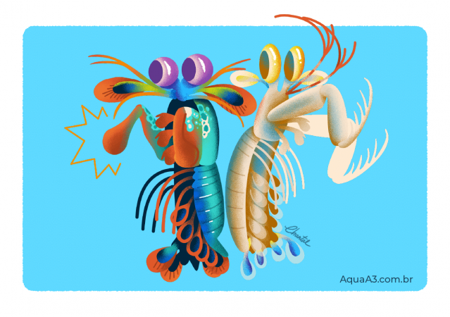
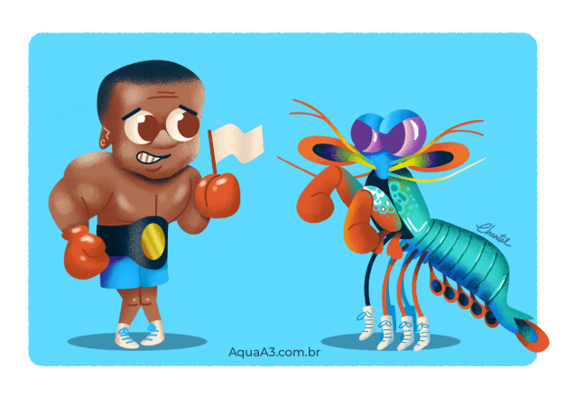
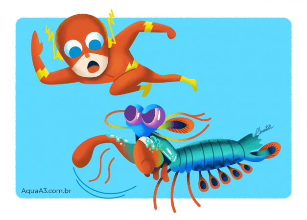

Stomatopoda
Fatos sobre o Stomatopoda

O que e?
Stomatopoda (ou estomatópode),
chamados popularmente de tamarutacas ou de lacraias-do-mar no Brasil,
é uma ordem de crustáceos marinhos da subclasse Hoplocarida, que agrupa cerca de 400 espécies,
caracterizadas principalmente pela morfologia da segunda pata torácica, que é modificada em apêndice subquelado,
lembrando uma pata de louva-a-deus.
O Stomatopada é um perfurador e esmagador!
Grupos
-
Devido a uma diferença anatômica de seus apêndices,
o Camarão Mantis pode ser classificado em dois grupos:
os que têm ataque perfurador (spearers) e esmagador (smashers).
Com isso, os esmagadores são considerados um dos animais mais fortes e velozes do planeta,
por terem um ataque rápido como uma bala e forte como um touro
O animal mais forte do mundo
Nome
-
O Camarão Mantis esmagador possui dois apêndices bem desenvolvidos (semelhantes a um martelo),chamados de Porretes de Dáctilo.
Com essas “super patas” o animal espanca e esmaga suas presas em uma intensidade de aproximadamente 60 kg/cm² (daí o motivo de um de seus nomes ser lagosta-boxeadora).
O animal mais rápido no gatilho
Velocidade
-
Além da enorme potência de seu soco, esse animal consegue movimentar seus apêndices tal qual um tiro de arma de fogo:
seu golpe pode chegar a uma velocidade 720 km/h.
Curiosamente, tanto a força quanto rapidez do ataque, não danificam sua estrutura corporal.